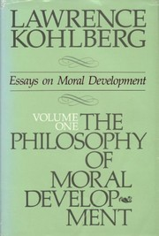

The Philosophy of Moral Development: Moral Stages and the Idea of Justice (Essays on Moral Development, Vol. 1)
Book·Lawrence Kohlberg, 1981·道德发展的哲学

The first volume of Essays on Moral Development. In it Kohlberg systematically presents the three levels and six stages of moral development and the idea of justice.
- Author
- Lawrence Kohlberg
- Year
- 1981
- Difficulty
- Advanced
- Kind
- Primary text
- Schools
- Moral Development
- Core theories
- Kohlberg's Six Stages
Editions
- English edition The Philosophy of Moral Development: Moral Stages and the Idea of Justice (Essays on Moral Development, Vol. 1) Lawrence Kohlberg · Harper & Row · 1981 Open Library ↗